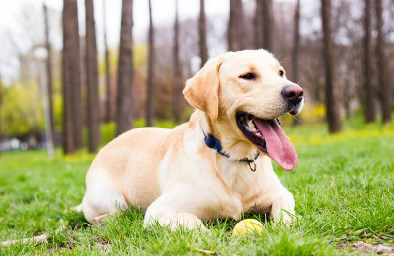
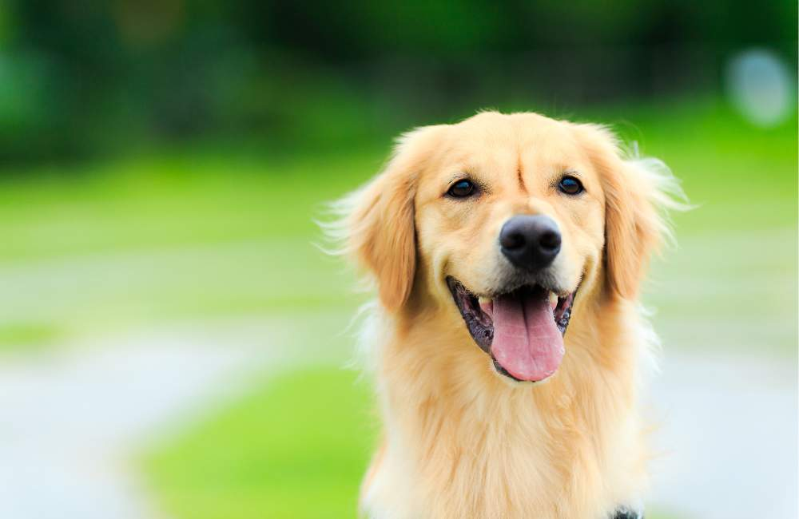
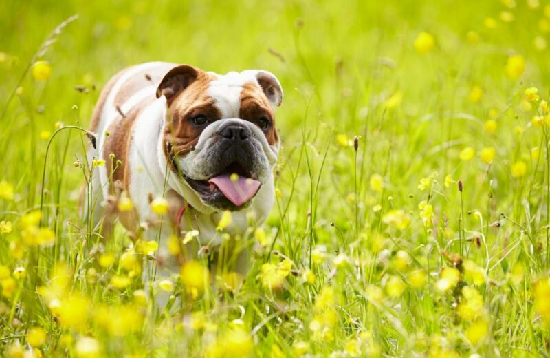
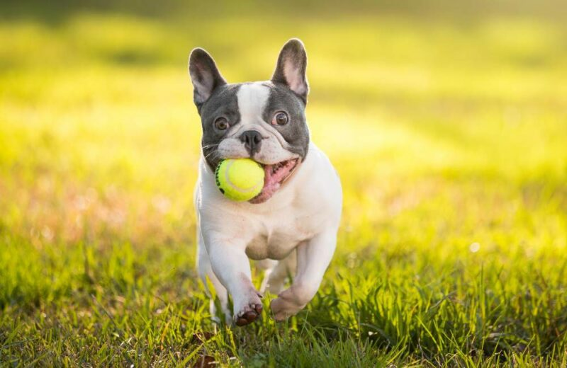
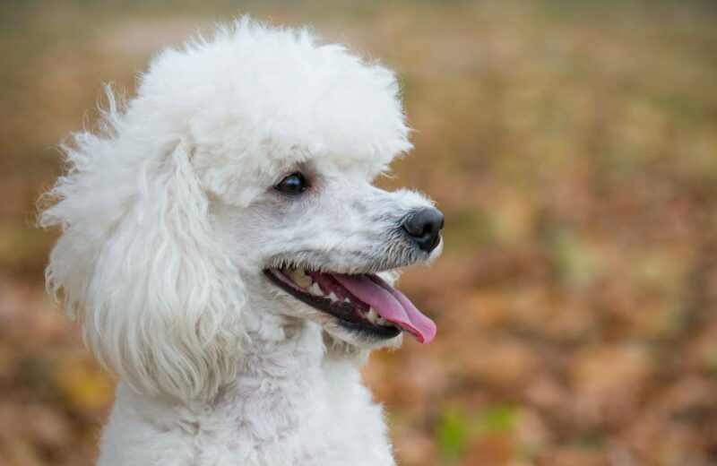
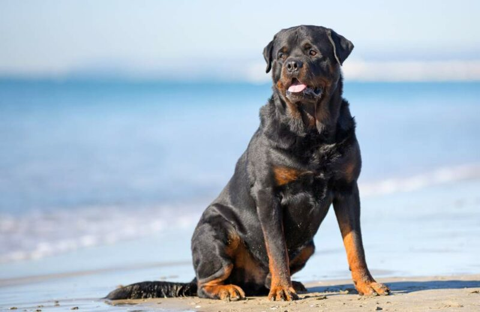
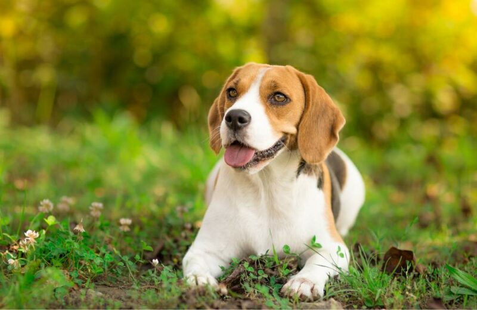
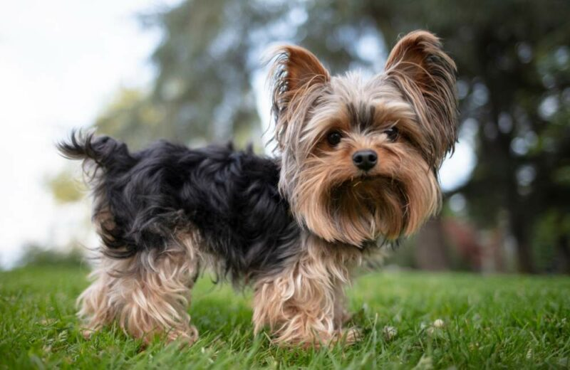
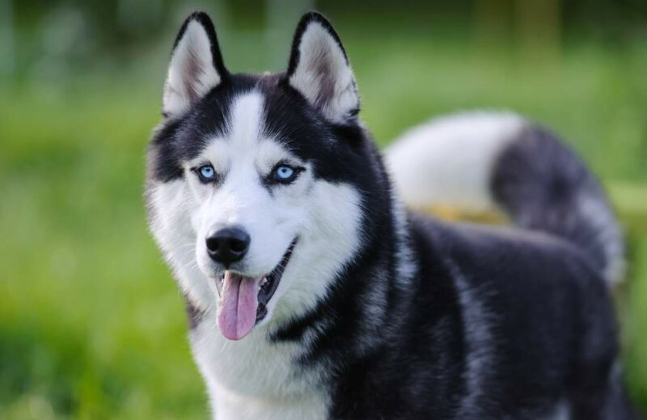

Labrador retriever
A labradorok jelleme laza és nyugodt, ugyanakkor a munkát nagyon komolyan veszik. Fontos számukra, hogy hasznosnak érezzék magukat, szeretnek az emberek kedvére tenni. Tehetségesek a sportban, ügyesen veszik az akadályokat és bámulatos állóképességgel rendelkeznek.
Golden retriever
Játékos, barátságos és szeretnivaló mosolygombóc ő a golden retriever. Energikus és családszerető, ezért az aktív családok nagy kedvence. A golden retriever mellett nem lehet unatkozni, állandóan a nyomodban van, szórakoztató társaságot nyújt, mindent visszavisz neked csak azért, hogy újra eldobd neki és bármikor benne van egy kalandos kirándulásban.
Német juhászkutya

A német juhászkutya farkashoz hasonló külsejéről, robusztus testalkatáról, fizikai erejéről és megkérdőjelezhetetlen hűségéről ismert. A németjuhász eredetileg juhok őrzésére és terelésére lett kitenyésztve, ám hamar fény derült arra, hogy sokkal többre hivatottak. Valódi lángelmék, akik rendkívül jól taníthatók és hihetetlenül szófogadók, ha jó kezekbe kerülnek.
Angol bulldog
Az angol bulldog első ránézésre olyan, mint egy rajzfilmfigura, az idősebbek talán még meg is vakarják a fejüket, hogy az eb vajon a Tom és Jerry-ből lépett elő? Nos, az angol bulldog nem mai gyerek, jóval öregebb, mint a filmvászon, még akkor is, ha gyakorta megihleti a filmipar rendezőit.
Francia bulldog
A francia bulldog egy izmos, kompakt testalkatú kutya, akit nagyméretű fejéről, denevérfüleiről és szívbemarkoló arckifejezéséről ismerhetünk fel. Az eredendően társasági ebként számontartott francia bulldog nagyon bohókás és huncut természetű.
Uszkár
Az uszkár egy igazi jolly joker a kutyák között, hiszen többféle méretben is létezik, ami lehetővé teszi, hogy a hozzád leginkább illő változatot válaszd közülük. Mindegyikük hasonló vérmérséklettel rendelkezik, szinte alig akad különbség köztük, mindössze a testméretükben tapasztalható eltérés, ami hatással lehet a tartásukra, aktivitásukra.
Rottweiler
A rottweiler robusztus, masszív testalkatú nagytermetű kutyafajta, aki egy személyben testesíti meg az erőt, rátermettséget és melegszívűséget. Intelligenciája és kitartó munkabírása különféle munkák elvégzésére teszi alkalmassá. Nagyszerű rendőrkutya, nyomkereső és őrző-védő eb lehet belőle.
Beagle
Az egész világ a beagle orra körül forog. A te világod pedig a feje tetejére fog állni, ha örökbe fogadsz egy kölyköt. A kutya tartása olyan, akár egy izgalmas kaland, melyben hosszú felfedező séták várnak rád.
Yorkshire terrier
A yorkshire terrier egy meglehetősen kistestű kutyafajta, akiben hatalmas bátorság lakozik. Mesésen fényes és hosszú szőre mögött egy igazi vagány eb rejtőzik, aki nem fél szembeszállni a veszéllyel. Éber és territoriális jelleme gyakran készteti hangos ugatásra, mellyel igyekszik felhívni gazdái figyelmét a távolban lépkedő látogatókra.
Szibériai husky
Bolyhos bundájával, hipnotikus mandulavágású szemeivel és izmos testfelépítésével a szibériai husky a leggyönyörűbb kutyafajták egyike. Kecses és fürge mozgásuk végtelen állóképességgel párosul, nem véletlenül váltak a zord és fagyos tundra legkedveltebb szánhúzójává.